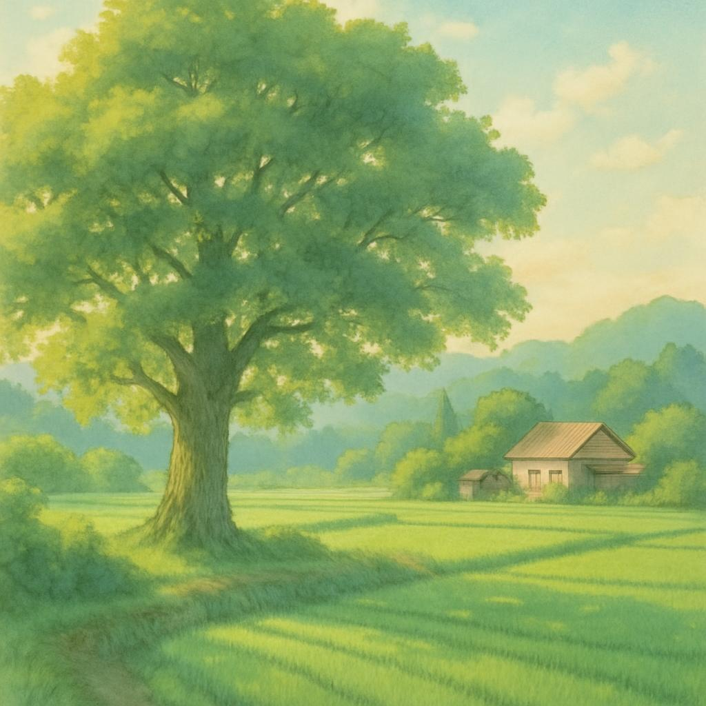
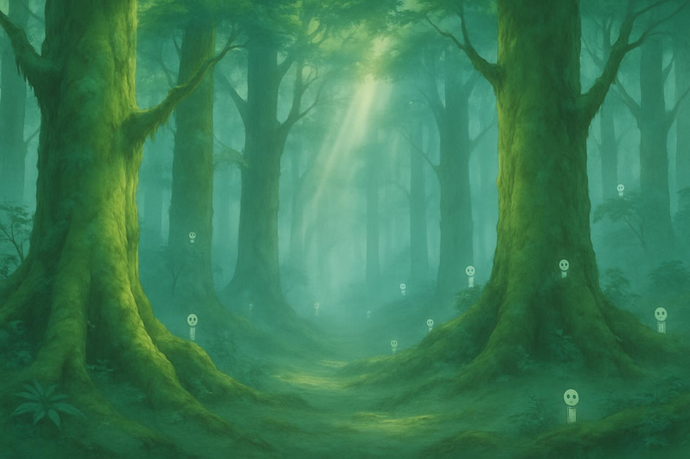
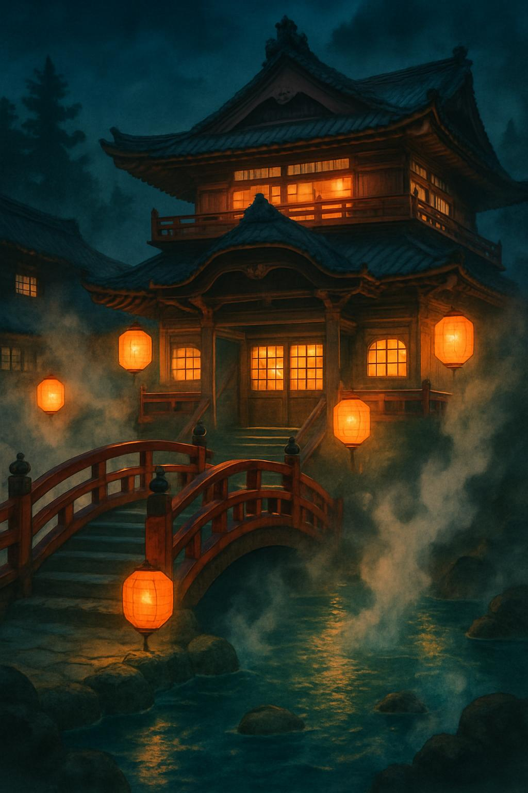
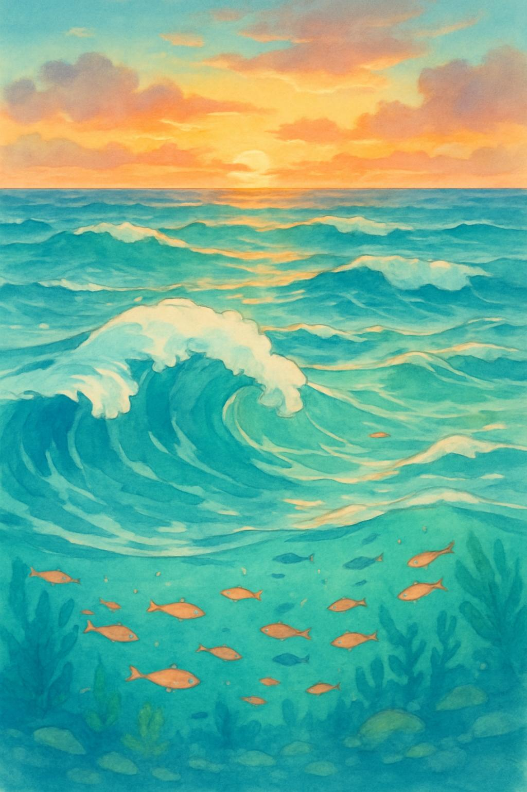

ジブリ作品に見る日本の自然観と環境思想
はじめに
スタジオジブリの作品群、特に宮崎駿監督の手がけた作品は、その美しい映像表現と深いメッセージ性によって、世界中の人々を魅了してきました。これらの作品に共通して見られるのは、自然と人間の関係性についての深い洞察と、環境問題に対する鋭い問題提起です。
宮崎駿監督は、インタビューで「自然を大切にする」「森を大事にしたり、川を綺麗にする」ことは、人間のためだけではなく「森や川自体に生命があるもの」だからだと述べています。この考え方は、日本の伝統的な自然観に深く根ざしたものであり、神道における「八百万の神々」の概念とも密接に関連しています。
本記事では、『風の谷のナウシカ』『もののけ姫』『となりのトトロ』『千と千尋の神隠し』『崖の上のポニョ』などの代表作を通じて、ジブリ作品に表現された日本の自然観と環境思想を探ります。また、これらの作品が現代の環境問題に対してどのような示唆を与えるのかについても考察していきます。
日本の伝統的自然観とアニミズム
神道における八百万の神々と自然信仰
日本の伝統的な自然観の根底にあるのは、神道における「八百万（やおよろず）の神々」という概念です。これは、自然界のあらゆるものに神が宿るという考え方で、山や川、木や石、さらには自然現象にまで神格を見出す多神教的な世界観です。
この考え方は、西洋のキリスト教的な自然観とは大きく異なります。キリスト教では、神が自然を創造し、人間がそれを管理するという階層的な関係性が想定されていますが、日本の神道では、人間も自然も神々も同じ世界の一部として共存する関係にあります。
宮崎駿監督の作品には、この八百万の神々の世界観が色濃く反映されています。特に『千と千尋の神隠し』では、湯屋を訪れる様々な神々の姿を通じて、日本の伝統的な神観念が視覚化されています。また、『もののけ姫』のシシ神や『となりのトトロ』のトトロなどのキャラクターも、自然に宿る神的存在として描かれています。
日本文化における人間と自然の関係性
日本文化における人間と自然の関係性は、対立ではなく共生を基本としています。日本の伝統的な住居や庭園は、自然を取り込み、自然と調和するように設計されています。また、四季の変化を重視し、それに合わせた生活様式や行事を大切にする文化も、自然との共生意識の表れと言えるでしょう。
この共生の思想は、「里山」という概念にも表れています。里山とは、人間が適度に手を入れることで維持される半自然的な環境のことで、人間の営みと自然が調和した空間です。『となりのトトロ』に描かれる昭和30年代の農村風景は、まさにこの里山の世界であり、人間と自然が共存する理想的な関係性を示しています。
西洋的自然観との比較
西洋の自然観は、特に近代以降、自然を征服・支配の対象として捉える傾向がありました。デカルトの心身二元論に代表される西洋哲学では、人間（精神）と自然（物質）を分離し、人間が自然を客観的に観察・分析・利用する関係性が強調されてきました。
これに対し、日本を含む東アジアの自然観では、人間と自然を連続的なものとして捉え、相互依存の関係にあると考えます。自然は単なる資源や研究対象ではなく、人間と共に生きる存在であり、時に畏怖の対象でもあります。
宮崎駿監督は、この東西の自然観の違いを意識しながら作品を創作しています。特に『もののけ姫』では、西洋的な進歩思想（タタラ場のエボシ）と東洋的な自然共生思想（アシタカやサン）の対立が描かれており、どちらか一方が完全に正しいという単純な結論は示されていません。
『風の谷のナウシカ』に見る環境再生と共生の思想
腐海と人類の対立構造
『風の谷のナウシカ』は、人類が引き起こした「七日間の火」と呼ばれる大規模な環境破壊の後の世界を舞台としています。地球の大部分は「腐海」と呼ばれる有毒な森に覆われ、その中には巨大な蟲（むし）が生息しています。人類はわずかに残された居住可能な地域で生き延びていますが、腐海の拡大によってその生存圏は脅かされています。
この設定には、1970年代から80年代にかけて深刻化した環境問題への危機感が反映されています。特に、産業公害や核の脅威に対する日本社会の不安が、「腐海」という形で象徴的に表現されているのです。
物語の中で人類は腐海を敵視し、その拡大を食い止めようと様々な手段を講じます。トルメキア王国は「巨神兵」という古代兵器を復活させて腐海を焼き払おうとしますが、これは環境問題に対する技術的解決策（テクノフィックス）への批判とも読み取れます。
浄化と再生のメタファーとしての腐海
物語が進むにつれて、腐海の真の姿が明らかになります。腐海は単なる有毒な森ではなく、汚染された地球を浄化するためのシステムだったのです。腐海の木々は地下深くまで根を張り、土壌に蓄積された毒素を吸い上げて無害化しています。そして、その過程で浄化された土壌が地下の空洞に堆積し、やがて新たな生態系の基盤となるのです。
この設定には、自然の持つ自己浄化能力と再生力への信頼が表れています。人間が引き起こした環境破壊に対して、自然は独自の方法で対応し、長い時間をかけて環境を再生させようとしているのです。
ナウシカが腐海の地下で発見した浄化された環境は、「自然は人間よりも賢い」というメッセージを伝えています。人間が短絡的に腐海を破壊しようとすることは、この自然の浄化プロセスを妨げることになり、結果的に地球環境の回復を遅らせることになるのです。
環境破壊後の世界における共存の可能性
『風の谷のナウシカ』の中心的なテーマは、環境破壊後の世界における人間と自然の共存の可能性です。主人公のナウシカは、腐海や蟲を恐れながらも理解しようと努め、両者の間に立って共存の道を模索します。
特に印象的なのは、ナウシカが蟲の王者「王蟲」と心を通わせるシーンです。これは、人間と自然（蟲）が言葉を超えたレベルでコミュニケーションを取り、相互理解に至る可能性を示しています。
また、風の谷の人々の生活様式も重要です。彼らは自然エネルギー（風力）を利用し、環境に負荷をかけない持続可能な生活を送っています。これは、技術と自然が調和した理想的な社会の姿を示唆しています。
『風の谷のナウシカ』は、環境破壊という最悪の事態が起きた後でも、人間と自然が共存する道はあるというメッセージを伝えています。しかし、それには自然の仕組みを理解し、尊重する姿勢が不可欠なのです。
『もののけ姫』における自然と文明の相克
タタラ場と森の対立構造
『もののけ姫』は、室町時代後期の日本を舞台に、人間の営みと原生林の対立を描いた作品です。物語の中心にあるのは、製鉄の町「タタラ場」と、神々が住まう「シシ神の森」の対立です。
タタラ場を率いるエボシは、鉄を生産するために森を切り開き、資源を採取します。彼女は孤児や遊女など社会的弱者を受け入れ、彼らに仕事と居場所を与える進歩的な指導者でもあります。一方、シシ神の森には、猪神のモロや狼神のモロの君など、様々な神々が住んでおり、森を守るために人間に抵抗します。
この対立構造は、産業発展と環境保全のジレンマを象徴しています。タタラ場の活動は、人間社会の発展と弱者の救済という正当な目的を持っていますが、同時に自然環境を破壊するという負の側面も持っています。
シシ神の森が象徴する原初の自然
シシ神の森は、人間の手が入っていない原生的な自然を象徴しています。森の中心にいるシシ神（昼はディダラボッチ、夜は「夜の顔」）は、生と死を司る存在として描かれています。シシ神は傷ついた者を癒し、命を与えることもできれば、命を奪うこともできる両義的な存在です。
この設定には、日本の伝統的な自然観が反映されています。自然は恵みをもたらす母なる存在であると同時に、時に牙をむく恐ろしい存在でもあるという二面性です。シシ神の森の美しさと危険性は、この自然の二面性を視覚的に表現しています。
また、シシ神が首を失った際に引き起こされる大規模な環境破壊は、自然のバランスが崩れることの危険性を示しています。自然は単なる資源の集合体ではなく、複雑なバランスの上に成り立つ一つの生命体のような存在なのです。
人間の進歩と自然破壊の二律背反
『もののけ姫』の最も重要なテーマは、人間の進歩と自然保護の二律背反です。エボシもアシタカも、それぞれの立場で正義を追求していますが、その正義が衝突するとき、簡単な解決策はありません。
宮崎駿監督は、この作品で環境問題に対する単純な答えを提示することを避けています。エボシを一方的な悪役として描くのではなく、彼女の行動にも正当な理由があることを示しています。同様に、森の神々も単純な善の象徴ではなく、時に残忍で復讐心に燃える存在として描かれています。
物語の結末も、明確な勝者を示すものではありません。シシ神の森は破壊されますが、エボシのタタラ場も大きな打撃を受けます。アシタカとサンは愛し合いながらも、それぞれの世界で生きることを選びます。この曖昧な結末は、人間と自然の関係に単純な解決策はなく、常に対話と妥協が必要であることを示唆しています。
宮崎駿監督は、インタビューで『もののけ姫』について「答えのない問いを投げかけた」と述べています。この作品は、環境問題に対する啓蒙というよりも、その複雑さと難しさを認識させるものなのです。
『となりのトトロ』に描かれる日本の原風景と自然との調和
里山の生態系と人間の共存
『となりのトトロ』は、昭和30年代（1950年代）の日本の農村を舞台にした作品です。主人公のサツキとメイが引っ越してきた場所は、典型的な「里山」の風景を持っています。里山とは、人間が適度に手を入れることで維持される半自然的な環境のことで、日本の伝統的な農村風景を形作ってきました。
作品の中では、田んぼや雑木林、小川などの里山の要素が美しく描かれています。これらの環境は、完全な原生自然でも、完全な人工環境でもなく、人間と自然が共同で作り上げた空間です。農作業のシーンや、草刈りのシーンなどは、人間が自然に手を入れながらも、それを尊重している様子を示しています。
この里山の風景は、日本人にとっての「原風景」として機能しています。多くの日本人が、この風景に郷愁を感じるのは、それが日本文化の中で理想化された人間と自然の関係性を表しているからでしょう。
トトロという存在が象徴する自然の精霊
作品のタイトルにもなっている「トトロ」は、森に住む不思議な生き物として描かれています。トトロの正体は明確に説明されていませんが、子どもたちにしか見えないこと、大きなクスノキに住んでいること、夜に不思議な力を発揮することなどから、森の精霊や神的存在として解釈できます。
トトロが住むクスノキには、注連縄（しめなわ）が巻かれており、神聖な場所であることが示唆されています。これは、日本の神道における「神木」の概念と一致しており、特定の木に神が宿るという信仰を反映しています。
トトロとの交流は、子どもたちが自然と直接的なつながりを持つことの象徴です。大人たちはトトロを見ることができませんが、それは現代社会において、多くの大人が自然との直接的なつながりを失っていることの表れかもしれません。
子どもの視点から見る自然との交流
『となりのトトロ』の特徴の一つは、子どもの視点から自然を描いていることです。サツキとメイは、大人とは異なる感性で自然を体験します。彼らは、どんぐりを拾ったり、雨の中を走ったり、木に登ったりと、全身で自然と交流します。
特にメイがトトロを発見するシーンは印象的です。彼女は好奇心のままに小さなトトロを追いかけ、大きなトトロの寝床にたどり着きます。この無邪気な探索は、子どもが持つ自然への純粋な興味と、先入観のない受容性を示しています。
宮崎駿監督は、子どもの視点を通じて、私たちが忘れてしまった自然との関わり方を思い出させようとしているのかもしれません。大人になるにつれて失われがちな、自然に対する感性や畏敬の念を、この作品は優しく呼び覚ましているのです。
『千と千尋の神隠し』における自然の神格化と現代社会批判
八百万の神々と日本の伝統的信仰
『千と千尋の神隠し』は、現代の少女・千尋が迷い込んだ不思議な世界を舞台にしています。その世界の中心にある湯屋は、「八百万の神様が疲れを癒やしに来る」場所として描かれています。
作品に登場する様々な神々は、日本の伝統的な信仰を視覚化したものです。川の神、雨の神、道祖神など、自然現象や場所に宿る神々が、具体的な姿形を持って描かれています。特に印象的なのは、汚れた川の神として登場する「腐れ神」のエピソードです。彼は本来は川の神でしたが、人間が川に投棄した大量のゴミによって正体が分からないほど汚れてしまいました。千尋の助けによって体内のゴミが取り除かれると、美しい龍の姿の川の神として本来の姿を取り戻します。
このエピソードは、自然（川）の神聖さと、それを汚す現代社会への批判を含んでいます。かつて日本人が畏敬の念を持って接していた自然の神々が、現代では忘れられ、軽視されている状況を象徴しているのです。
消費社会・環境汚染への批判
『千と千尋の神隠し』には、現代の消費社会や環境問題に対する批判が込められています。千尋の両親が豚に変えられるシーンは、過剰な消費（食べ物を貪り食う）への批判として解釈できます。また、カオナシというキャラクターは、金（偽物の金）で人々を惹きつけようとする消費社会の空虚さを象徴しています。
前述の腐れ神のエピソードは、環境汚染の問題を直接的に取り上げています。川に捨てられた自転車や冷蔵庫などの大型ゴミは、現代社会の使い捨て文化と環境への無関心を表しています。
また、湯屋という設定自体も意味を持っています。湯屋は水を使って体を清める場所であり、物理的な汚れだけでなく、精神的な穢れも落とす場所です。神々が湯屋を必要とするという設定は、現代社会の汚染が神々の世界にまで及んでいることを示唆しています。
忘れられた価値観の再発見
『千と千尋の神隠し』の重要なテーマの一つは、現代社会で忘れられた価値観の再発見です。物語の中で千尋は、自分の名前を奪われ（「千」と呼ばれるようになり）、自分のアイデンティティを見失いかけます。しかし、彼女は湯屋での経験を通じて、勤勉さ、思いやり、勇気といった価値観を再発見し、成長していきます。
この物語は、現代の日本社会が失いつつある伝統的な価値観や自然との関わり方を思い出させる役割を果たしています。千尋が異世界での経験を通じて成長するように、観客も映画を通じて忘れられた価値観に触れ、自分自身を見つめ直す機会を得るのです。
宮崎駿監督は、この作品で現代社会を批判しながらも、希望を捨てていません。千尋が最終的に両親を救い、現実世界に戻ることができるのは、彼女が異世界での経験を通じて本当の意味での成長を遂げたからです。同様に、現代社会も伝統的な価値観を再発見し、自然との関係を見直すことで、より良い方向に変わる可能性があるというメッセージが込められているのです。
『崖の上のポニョ』に見る海洋環境と人間活動
海洋汚染の表現と自然の反乱
『崖の上のポニョ』は、一見すると可愛らしい子ども向けの物語に見えますが、その背景には海洋環境と人間活動の関係についての深い考察が含まれています。主人公のポニョは、海の魔法使いフジモトの娘で、本来は小さな金魚のような姿をしていますが、人間の少年・宗介と出会ったことで人間になりたいと願うようになります。
作品の冒頭では、海底の様子が詳細に描かれていますが、そこには人間が捨てたゴミ（ビン、缶、プラスチックなど）が散乱しています。フジモトは、これらの汚染物質を集めて浄化する作業を行っており、人間の活動によって汚染された海を憂いています。
物語の中盤で起こる大規模な津波は、ポニョの力が暴走したことによるものですが、同時に自然（海）の反乱としても解釈できます。人間の活動によって乱されたバランスが、予期せぬ形で人間社会に影響を与えるという構図は、現実の環境問題とも重なります。
水と生命の関係性
『崖の上のポニョ』では、水と生命の密接な関係性が強調されています。ポニョ自身が水の生き物であり、彼女の力は水を操ることです。また、物語の舞台となる港町は、常に海と共に生きる人々の暮らしが描かれています。
特に印象的なのは、津波の後の水没した世界のシーンです。宗介の家の周りは海の中になり、様々な海の生き物が泳ぎ回っています。このシーンは、かつて海だった場所に人間が住んでいるという事実を視覚的に表現しており、人間と海の境界の曖昧さを示しています。
また、リサ（宗介の母）が車で危険な水没道路を走るシーンは、人間が自然（水）の力に対して無力であることを示しています。しかし同時に、彼女が諦めずに前進する姿は、自然と共存するために必要な勇気と決断力を象徴しているとも言えるでしょう。
自然災害と人間の共存
『崖の上のポニョ』は、2011年の東日本大震災の前に制作された作品ですが、津波による被害と、その後の人々の対応を描いている点で、予言的な側面を持っています。
作品の中では、津波の後も人々は冷静に対応し、特に老人ホームの高齢者たちは経験に基づいた知恵で状況を乗り切ります。これは、自然災害と共存してきた日本の歴史的経験を反映しています。
また、最終的にポニョが人間として生きることを選び、海のバランスも回復するという結末は、人間と自然が対立するのではなく、相互理解と尊重に基づいて共存できる可能性を示唆しています。
宮崎駿監督は、この作品で自然災害の恐ろしさを描きながらも、人間の適応力と回復力、そして自然との新たな関係を築く可能性に焦点を当てています。これは、環境問題に対する悲観的な見方だけでなく、希望を持って取り組む姿勢の重要性を示すメッセージと言えるでしょう。
ジブリ作品の環境思想が現代社会に投げかける問い
持続可能な開発と環境保全の両立
ジブリ作品、特に宮崎駿監督の作品は、持続可能な開発と環境保全の両立という現代社会の大きな課題に対して、様々な視点を提供しています。
『もののけ姫』では、タタラ場の産業活動と森の保全のジレンマが描かれています。エボシの活動は、当時の社会的弱者（女性や病人）に機会を与える進歩的なものでしたが、同時に環境破壊をもたらすものでもありました。この二律背反は、現代社会における経済発展と環境保全のジレンマと重なります。
『風の谷のナウシカ』では、風の谷の人々の生活様式が一つのモデルとして提示されています。彼らは風力エネルギーを利用し、自然と調和した持続可能な生活を送っています。これは、再生可能エネルギーの活用と環境負荷の少ないライフスタイルの重要性を示唆しています。
これらの作品は、持続可能な社会への移行には、技術的な解決策だけでなく、価値観や生活様式の変革も必要であることを示しています。
テクノロジーと自然の関係性の再考
ジブリ作品では、テクノロジーと自然の関係性についても深い考察がなされています。
『風の谷のナウシカ』の「巨神兵」や『天空の城ラピュタ』の「ラピュタの科学力」は、高度なテクノロジーが環境破壊や戦争に利用される危険性を示しています。一方で、『もののけ姫』のタタラ場の技術や『ハウルの動く城』の魔法と機械の融合は、テクノロジーの両義性を表現しています。
宮崎駿監督は、テクノロジーそのものを否定するのではなく、それをどのように使うかが重要だというメッセージを伝えています。テクノロジーは、自然を支配・征服するためのものではなく、自然と共存するためのツールとして再定義される必要があるのです。
現代社会においても、AI、バイオテクノロジー、再生可能エネルギーなどの新技術が急速に発展していますが、これらをどのように活用するかは私たちの価値観や選択に委ねられています。ジブリ作品は、テクノロジーと自然の新たな関係性を模索する上での重要な視点を提供しているのです。
日本的自然観が現代環境問題に示唆するもの
日本の伝統的な自然観、特に神道に基づく八百万の神々の概念や、自然と人間の連続性を重視する考え方は、現代の環境問題に対して独自の視点を提供します。
まず、自然のあらゆるものに神性を見出す考え方は、自然に対する畏敬の念と責任感を育みます。『千と千尋の神隠し』の腐れ神のエピソードが示すように、自然（川）を汚すことは、単なる物理的な環境破壊ではなく、神聖なものを冒涜する行為として捉えられます。
また、人間と自然を対立するものではなく、連続的なものとして捉える視点は、環境問題を「人間vs自然」という二項対立で考えるのではなく、共存と調和の問題として捉え直す可能性を示しています。『となりのトトロ』に描かれる里山の風景は、人間の営みが自然の一部として組み込まれた持続可能な関係性のモデルとなります。
さらに、『もののけ姫』が示すように、環境問題には単純な解決策はなく、様々な立場や価値観のバランスを取りながら、対話と妥協を通じて解決策を模索する必要があります。これは、現代の複雑な環境問題に対する姿勢としても重要です。
ジブリ作品に表現された日本的自然観は、西洋的な環境思想を補完し、より包括的な環境問題への取り組みを可能にする視点を提供しているのです。
結論：ジブリ作品から学ぶ環境共生の知恵
作品に共通する環境メッセージの本質
ジブリ作品、特に宮崎駿監督の作品に共通する環境メッセージの本質は、自然と人間の関係性の再構築にあります。これらの作品は、自然を単なる資源や征服の対象としてではなく、人間と共存し、時に人間を超える存在として描いています。
また、環境問題に対する単純な善悪二元論を避け、複雑な現実を多角的に描く姿勢も特徴的です。『もののけ姫』のエボシや『風の谷のナウシカ』のクシャナ王女など、一見すると環境破壊の側に立つキャラクターにも、それぞれの正当な理由や人間的な魅力が与えられています。
さらに、子どもの視点を大切にする姿勢も重要です。『となりのトトロ』のサツキとメイ、『崖の上のポニョ』の宗介など、子どもたちは先入観なく自然と交流し、大人には見えない価値を見出します。この子どもの視点は、私たち大人が忘れてしまった自然との関わり方を思い出させる役割を果たしています。
現代の環境問題への応用可能性
ジブリ作品の環境思想は、現代の環境問題に対しても多くの示唆を与えています。
まず、環境問題を単なる技術的・政治的問題としてではなく、文化的・精神的な問題としても捉える視点が重要です。『千と千尋の神隠し』が示すように、環境問題の根底には、自然に対する畏敬の念や伝統的価値観の喪失という問題があります。
また、『風の谷のナウシカ』や『もののけ姫』が示すように、環境問題の解決には、異なる立場や価値観の間の対話と相互理解が不可欠です。一方的な正義の押し付けではなく、多様な視点を尊重する姿勢が求められます。
さらに、『となりのトトロ』に描かれる里山のような、人間と自然が共存する伝統的な知恵を現代に活かす試みも重要です。日本各地で行われている里山保全活動や、都市における緑地の創出などは、この方向性の実践例と言えるでしょう。
未来世代への継承すべき自然観
ジブリ作品が示す自然観を未来世代に継承していくことは、持続可能な社会を実現する上で重要な課題です。
特に重要なのは、自然に対する感性や畏敬の念を育むことです。『となりのトトロ』のように、子どもたちが直接自然と触れ合い、その不思議さや美しさを体験する機会を提供することが大切です。
また、『もののけ姫』が示すように、環境問題の複雑さと、単純な解決策がないことを理解する姿勢も重要です。環境教育においては、単純な「正解」を教えるのではなく、多角的な視点から考える力を育むことが求められます。
さらに、『風の谷のナウシカ』や『崖の上のポニョ』が示すように、困難な状況においても希望を持ち、積極的に行動する勇気も大切です。環境問題の深刻さを認識しつつも、諦めるのではなく、できることから行動を起こす姿勢を育むことが重要です。
ジブリ作品は、単なるエンターテイメントを超えて、私たちの自然観や環境への姿勢に深い影響を与えています。これらの作品が示す知恵と視点を、次世代に継承していくことは、持続可能な未来を築く上での重要な文化的資源となるでしょう。
参考文献・資料
- 宮崎駿『出発点 1979〜1996』徳間書店、1996年
- 叶精二『宮崎駿全書』講談社、2006年
- 小野俊太郎『ジブリの森へ―宮崎駿を読む』朝日新聞出版、2008年
- 藤原章生『宮崎駿の原点』講談社、2018年
- 「宮崎駿の自然観について——そのアジア主義的な命脈」nippon.com、2015年
- 「ジブリ映画の環境思想：日本的風土に関わる考察」北海道教育大学紀要、2016年
- 「『となりのトトロ』において表象される日本人の自然観」神奈川大学人文学会誌、2019年
- 「『千と千尋の神隠し』における神々の零落」佐賀大学文化教育学部研究論文集、2016年